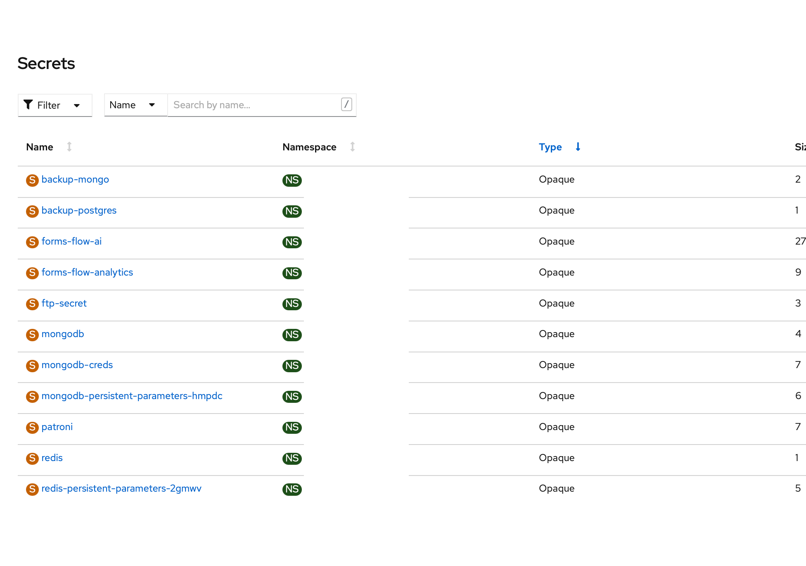

Openshift Based Installation
-
Openshift Full Deployment
Follow the instructions
formsflow.ai - Openshift Setup
This page details elaborates about deploying overall in openshift. All the applicaiton are deployed using openshift templates.
The templates are tested , ran and customised for running in BCGOV pathfinder OCP3 and Openshift 4 silver cluster , there could be particular places where the templates are opinionated. Feel free to alter them and generalise them for any kubernetes/openshift deployments
Every component has a build config [bc], Deployment config and might have a param file. The general syntax for running them is
oc process -f web_dc.yaml --param-file=web_param.yaml |oc apply -f - --ignoreunknownparams
an ideal topology will look like Databases

Databases
The application uses Postgres and Mongo DB for persistence.The below templates can be used as a reference to spin up new databases.Alternatively new databse schema can be created with in the existing database.
How to deploy postgres
Postgres HA and Non-HA templates can be used.
A sample patroni templates can be found at patroni-build.yaml ,patroni-deployment.yaml ,patroni-deployment-prereq.yaml
To avail the latest patroni templates ,Please refer to BCDevOps/platform-services/patroni templates
A sample non-Ha template is checked in here at postgres-non-ha template
How to deploy Mongo
Mongo HA and Non-HA templates can be used.
A sample Mongo HA template can be found at mongo-ha.yaml A sample Mongo non-HA templates can be found at mongodb-nonha.yaml
Secrets and Config maps
secrets
The forms-flow-ai secret contain most of the values which are mandatory for application to work.
running the formio_secrets_param.yaml with proper values should create the required secret.
There are other secrets which are needed as well. They are mostly Mongo , Postgres,Redash secrets as in the below screenshot

config maps
the two major config which are required to run the application is the forms-flow-web-config and forms-flow-web-keycloak-config. forms-flow-web-config contains the ids and urls required for web project to work. forms-flow-web-keycloak-config has the keycloak configs.

Build Configs/Images
Each project needs a build configuration and images/image stream to work with.An ideal build config will look like below.

Deployment Configs
An example deployment config will look like below

Docker files
the project has different deployment topoloiges and there are different docker files for each purpose as below
| filename | sample reference | Purpose |
|---|---|---|
| Dockerfile | Dockerfile | Dockerfile to support docker compose |
| openshift_Dockerfile | openshift_Dockerfile | Openshift based deployment |
| openshift_custom_Dockerfile | openshift_custom_Dockerfile | To allow customisation and build from this repo.Helps to copy stuff from the buidling repo and merge to the product. |
« Previous Next »